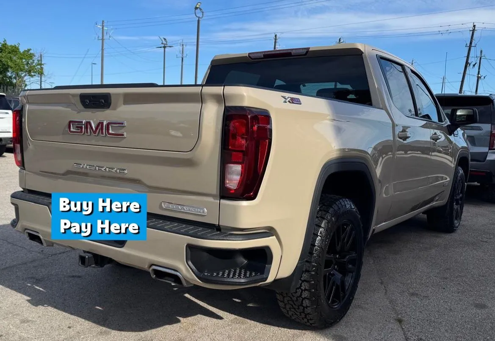

2022 GMC Sierra Elevation
Gris • ID CCH-365

1/5Datos generales
| Año | 2022 |
|---|---|
| Marca | GMC |
| Modelo | Sierra Elevation |
| Tipo | Troca |
| Color | Gris |
| Millas | 48,000 millas |
| Asientos | Por confirmar |
| Tracción | Por confirmar |
Ideal para
Para quien necesita una troca para trabajo y para el día a día.
Año, millas y características salen de los datos del inventario; confirma los datos exactos de esta unidad con el dealer. Esta ficha no muestra precios: el dealer los da por escrito.